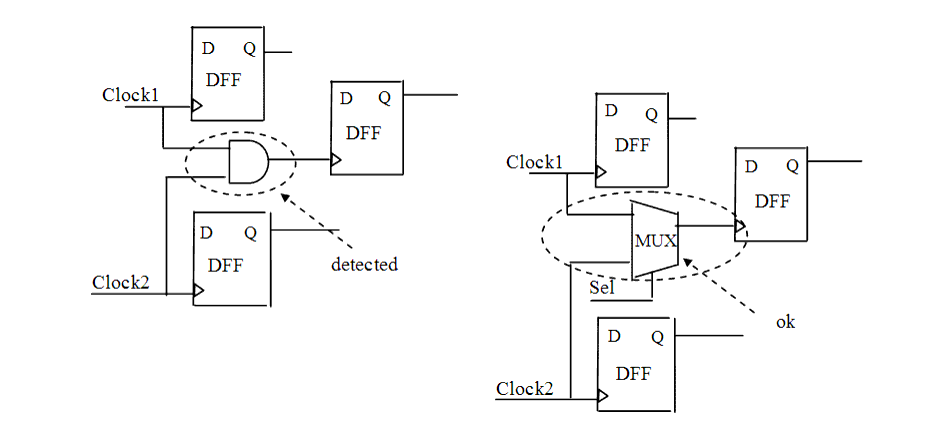

Description
This rule detects when multiple clocks are gated with a combinational circuit element other than a selector (multiplexer), and the gated signal is used also as clock.You can configure this rule using the rule_set_parameter Tcl command and the MUX_LIST parameter to specify complex multiplexers that you want the tool to examine, but which Leda cannot infer automatically. For example:
leda> rule_set_parameter -rule NTL_CLK33 \
-parameter MUX_LIST -value {MUX1, MUX2}
If you set the MUX_LIST parameter to null, Leda checks only the simple multiplexers that it can infer from the source code. If you set the MUX_LIST parameter to a list of complex multiplexers, Leda checks those plus the simple multiplexers that it infers automatically.
Policy
DESIGN
Ruleset
CLOCKS
Language
VHDL/Verilog
Type
Hardware
Severity
Warning
Here are examples of valid and invalid Verilog code, followed by circuit diagrams that illustrate the problem and the correct approach:
module ntl_clk33_top; // Invalid Example input Clock1, Clock2; ... wire D_01, D_02, Clock_comb, net_01; reg D_11, D_12, net_02; ... GTECH_FD1 U0(.D(D_01), .CP(Clock1), .Q(D_11)); GTECH_FD1 U1(.D(D_02), .CP(Clock2), .Q(D_12)); GTECH_AND2 U2(.A(Clock1), .B(Clock2), .Z(Clock_comb); GTECH_FD1 U3(.D(net_01), .CP(Clock_comb), .Q(net_02)); // NTL_CLK33 fires -- violation endmodule // Valid Example module ntl_clk33_top; input Clock1, Clock2, Sel; ... wire D_01, D_02, Clock_comb, net_01; reg D_11, D_12, net_02; ... GTECH_FD1 U0(.D(D_01), .CP(Clock1), .Q(D_11)); GTECH_FD1 U1(.D(D_02), .CP(Clock2), .Q(D_12)); GTECH_MUX U2(.A(Clock1), .B(Clock2), .S(Sel), .Z(Clock_comb); GTECH_FD1 U3(.D(net_01), .CP(Clock_comb), .Q(net_02)); // OK endmodule